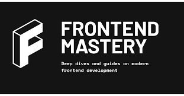

🌟 FrontendKick: The Platform to Kickstart Your Learning Journey! 🌟
🌟 فرونت إند كِك: منصتك للانطلاق في رحلة تعلمك! 🌟
انضم إلى موقعنا لتعلم تقنيات الواجهة الأمامية وإنشاء العديد من المشاريع.
فرونت إند كِك هو رفيقك المثالي لإتقان تطوير الواجهة الأمامية. هدفنا هو توفير أفضل الموارد والدروس والأدوات لمساعدتك على بناء أساس قوي في تطوير الويب وما بعده.

نُشر بواسطة: أحمد هرزالله يوم السبت 5/4/2025
لماذا تختار فرونت إند كِك؟
شروحات شاملة ومحدثة للمبتدئين والمحترفين على حد سواء.
تجربة تعليمية تفاعلية تشمل مشاريع عملية وتحديات.
دعم من مجتمع نشِط من المتعلمين والخبراء لمساندة رحلتك.
اشتراكات بأسعار مناسبة مع وصول غير محدود إلى كل الموارد.
شهادات وشارات لإبراز مهاراتك وإنجازاتك.
اكتشف، تعلّم، وانمو
انضم إلى فرونت إند كِك اليوم وابدأ أولى خطواتك نحو احتراف تطوير الواجهة الأمامية. سواء كنت مبتدئًا تمامًا أو ترغب في تحسين مهاراتك، لدينا ما يناسب الجميع.
ماذا ستتعلّم؟
في فرونت إند كِك، نغطي مجموعة واسعة من المواضيع لضمان حصولك على فهم شامل لتطوير الواجهة الأمامية. إليك بعض المجالات الأساسية التي نركز عليها:
HTML: الأساس لتطوير صفحات الويب.
CSS: لتصميم وتنسيق الصفحات بشكل جذاب.
JavaScript: لإضافة التفاعل والسلوك الديناميكي للمواقع.
SASS: لكتابة CSS قابلة للصيانة والتوسع.
تصميم متجاوب: لبناء مواقع تظهر بشكل جيد على جميع الأجهزة.
أطر الواجهة الأمامية: مثل React أو Vue.js.
تحسين أداء الويب: لضمان سرعة وكفاءة الموقع.
تصحيح واختبار الأكواد: لكتابة أكواد خالية من الأخطاء وموثوقة.
النشر: لإطلاق مشاريعك على الإنترنت.
وفي النهاية، ستكون:
مطورواجهة أمامية محترف!
تمتلكأساسًا قويًا في الواجهة الأمامية!
قادرًاعلى إنشاء أي واجهة مستخدم Frontend ترغب بها!